ТОПЛИВНАЯ ФОРСУНКА (для моделей без DPF) > УСТАНОВКА |
| 1. УСТАНОВИТЕ ФОРСУНКУ В СБОРЕ |
| 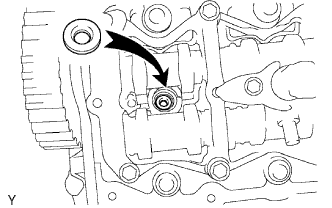 |
Установите 4 новых седла форсунок в головку блока цилиндров.
Нанесите тонкий слой чистого моторного масла на 4 новых кольцевых уплотнения.
| 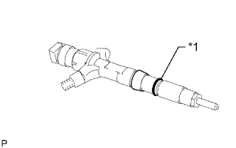 |
Установите кольцевое уплотнение на каждую форсунку, как показано на рисунке.
| *1 | Новое кольцевое уплотнение |
Установите 4 форсунки в головку блока цилиндров.
При замене форсунки новой деталью зарегистрируйте компенсационный код форсунки (Нажмите здесь).
| 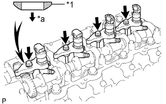 |
Временно закрепите 4 новых шайбы и 4 фиксатора корпуса форсунок № 1 4 болтами.
| *1 | Шайба |
| *a | Вниз |
| *1 | Фиксатор корпуса форсунки |
Временно закрепите 4 топливных трубки высокого давления гайками штуцеров.
| 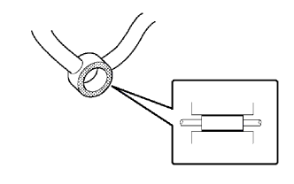 |
Проверьте трубопровод обратного слива топлива. Убедитесь, что на уплотнительных поверхностях 5 штуцеров нет царапин и вмятин.
Если присутствуют царапины или вмятины, замените трубопровод обратного слива топлива.
| 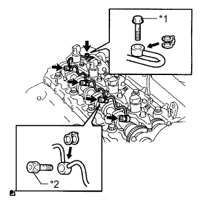 |
Установите на место трубку обратного слива и 5 новых прокладок.
| *1 | Пустотелый соединительный болт-штуцер |
| *2 | Полый винт |
Нанесите тонкий слой масла на 4 полых винта форсунок и пустотелый соединительный болт-штуцер.
Временно закрепите трубку обратного слива с помощью 4 полых винтов форсунок и пустотелого соединительного болта-штуцера.
Затяните 4 болта фиксаторов корпуса.
| 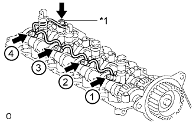 |
Затяните 4 полых винта в порядке с 1 по 4.
| *1 | Пустотелый соединительный болт-штуцер |
Затяните пустотелый соединительный болт-штуцер.
Снимите 4 топливные трубки высокого давления.
| 2. ПРОВЕРЬТЕ, НЕТ ЛИ УТЕЧЕК ТОПЛИВА |
| 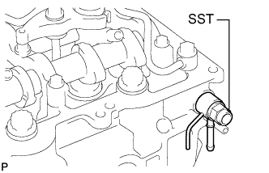 |
Убедитесь в отсутствии утечек из соединения трубопровода обратного слива топлива.
Установите прокладку и трубопровод обратного слива топлива № 2 на головку блока цилиндров с помощью SST (обратный клапан).
Нанесите немного мыльного раствора (или другой жидкости для обнаружения утечек топлива) на соединение трубопровода обратного слива топлива.
| 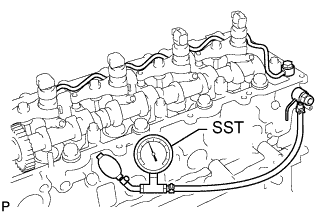 |
Установите SST (манометр для измерения давления наддува) со стороны возврата топлива трубки обратного слива и поддерживайте давление 100 кПа (1,0 кгс/см2, 15 фунтов на кв. дюйм) в течение 60 с, чтобы проверить, появляются ли пузырьки.
После проверки герметичности топливной системы вытрите мыльный раствор с соединения трубки обратного слива.
Снимите SST, трубопровод обратного слива топлива № 2 и прокладку.
| 3. УСТАНОВИТЕ КРЫШКУ ГОЛОВКИ БЛОКА ЦИЛИНДРОВ В СБОРЕ |
Удалите весь старый герметик (FIPG) с головки блока цилиндров.
| 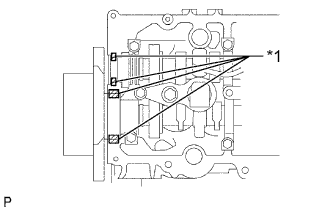 |
Нанесите герметик на заданные участки, показанные на рисунке.
| *1 | Герметик |
Закрепите новую прокладку и крышку головки блока цилиндров 10 болтами и 2 гайками.
Установите 4 новых уплотнительных кольца форсунок в головке блока цилиндров.
| 4. УСТАНОВИТЕ КРЫШКУ ГОЛОВКИ БЛОКА ЦИЛИНДРОВ № 2 В СБОРЕ |
| 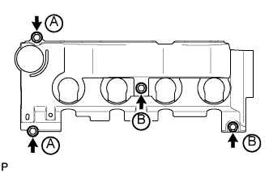 |
Закрепите крышку головки блока цилиндров № 2 4 болтами.
Присоедините 2 зажима жгута проводов и подсоедините жгут проводов к крышке головки блока цилиндров № 2.
Подсоедините 4 разъема форсунок.
| 5. УСТАНОВИТЕ ТРУБКУ ВЕНТИЛЯЦИИ КАРТЕРА |
Подсоедините 2 шланга вентиляции картера и закрепите трубку вентиляции картера болтом на крышке головки блока цилиндров.
| 6. УСТАНОВИТЕ ТРУБОПРОВОД ОБРАТНОГО СЛИВА ТОПЛИВА № 2 |
| 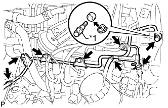 |
Временно закрепите трубопровод обратного слива топлива № 2 4 болтами.
Временно установите новую прокладку и пустотелый соединительный болт-штуцер.
| *1 | Пустотелый соединительный болт-штуцер |
Затяните 4 болта и пустотелый соединительный болт-штуцер.
Подсоедините 3 топливных шланга.
| 7. УСТАНОВИТЕ МАСЛЯНЫЙ ФИЛЬТР В СБОРЕ |
Проверьте и очистите установочную поверхность масляного фильтра.
Нанесите чистое моторное масло на прокладку нового масляного фильтра.
Навинтите маслянный фильтр на место вручную. Затяните его так,чтобы уплотнение прилегало к посадочной поверхности.
| 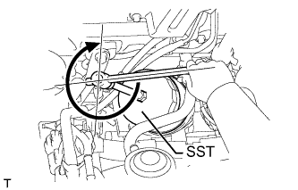 |
Затяните масляный фильтр с помощью SST. В зависимости от места проведения работ выберите следующее.
Если есть достаточно места, затяните масляный фильтр с помощью динамометрического ключа.
Если для использования динамометрического ключа недостаточно места, затяните масляный фильтр на 3/4 оборота вручную или обычным ключом.
| 8. УСТАНОВИТЕ ТОПЛИВНУЮ ТРУБКУ ВЫСОКОГО ДАВЛЕНИЯ № 4 |
 |
Временно закрепите топливную трубку высокого давления № 4 гайками штуцеров.
Заверните болт.
| 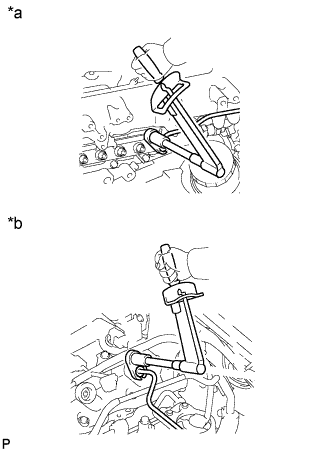 |
С помощью разрезной головки на 17 мм затяните гайку штуцера топливной трубки высокого давления со стороны топливной системы Common Rail.
| *a | Со стороны топливной системы Common Rail |
| *b | Со стороны форсунки |
С помощью разрезной головки на 17 мм затяните гайки штуцеров топливной трубки высокого давления со стороны форсунки.
| 9. УСТАНОВИТЕ ОПОРУ КОЛЛЕКТОРА С ЭЛЕКТРОВАКУУМНЫМ КЛАПАНОМ |
| 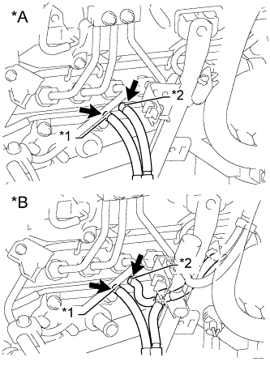 |
Закрепите опору коллектора с электровакуумным клапаном 2 болтами и подсоедините вакуумные шланги № 3 и № 4.
| *A | Для моделей без системы РОГ |
| *B | Для моделей с системой РОГ |
| *1 | Метка, нанесенная белой краской |
| *2 | Синяя метка |
Для моделей с охладителем РОГ:
Подсоедините вакуумный шланг № 3.
| 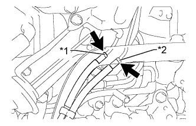 |
Для моделей с системой РОГ:
Подсоедините вакуумные шланги № 2 и № 3.
| *1 | Желтая метка |
| *2 | Розовая метка |
Подсоедините вакуумный шланг № 1.
Подсоедините разъем электровакуумного клапана.
Для моделей без системы РОГ:
Подсоедините разъем.
Для моделей с системой РОГ без охладителя РОГ:
Подсоедините 2 разъема.
Для моделей с системой РОГ с охладителем РОГ:
Подсоедините 3 разъема.
| 10. УСТАНОВИТЕ ПАТРУБОК ПОДАЧИ ВОЗДУХА С КОРПУСОМ ДРОССЕЛЬНОЙ ЗАСЛОНКИ ДИЗЕЛЬНОГО ДВИГАТЕЛЯ В СБОРЕ (для моделей без системы РОГ) |
 |
Установите новую прокладку на впускной коллектор.
 |
Установите патрубок подачи воздуха с корпусом дроссельной заслонки дизельного двигателя в сборе и закрепите 3 болтами.
Подсоедините разъем датчика положения дроссельной заслонки.
| 11. ПОДСОЕДИНИТЕ ЖГУТ ЭЛЕКТРОПРОВОДКИ ДВИГАТЕЛЯ (для моделей без системы РОГ) |
| 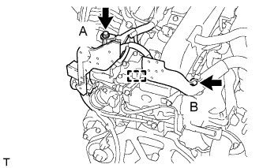 |
Для моделей с левосторонним рулевым управлением:
Подсоедините жгут электропроводки двигателя с помощью зажима и вверните 2 болта.
 |
Для моделей с правосторонним рулевым управлением:
Подсоедините жгут электропроводки двигателя с помощью болта.
| 12. УСТАНОВИТЕ ОПОРУ ПАТРУБКА ПОДАЧИ ВОЗДУХА (для моделей без системы РОГ) |
| 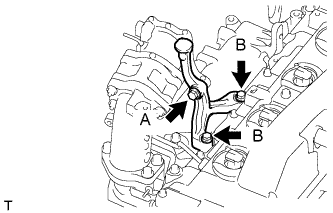 |
Предварительно установите опору патрубка подачи воздуха, закрепив ее 3 болтами.
Затяните болт, обозначенный А.
Затяните 2 болта В.
| 13. УСТАНОВИТЕ ТОПЛИВНЫЕ ТРУБКИ ВЫСОКОГО ДАВЛЕНИЯ № 1, № 2 И № 3 (для моделей без системы РОГ) |
Временно закрепите топливные трубки высокого давления № 1, № 2 и № 3 гайками штуцеров.
| 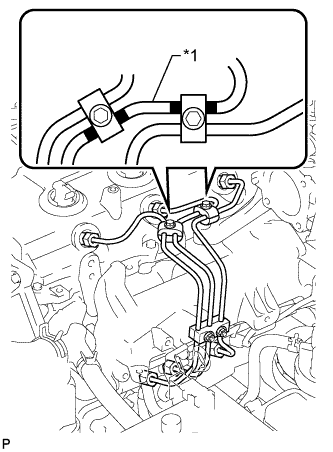 |
Закрепите зажимы топливных трубок высокого давления № 2 и № 3 2 болтами и 2 гайками, как показано на рисунке.
| *1 | Топливная трубка высокого давления № 2 |
| 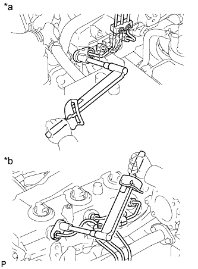 |
С помощью разрезной головки на 17 мм затяните гайки штуцеров топливной трубки высокого давления со стороны топливной системы Common Rail.
| *a | Со стороны топливной системы Common Rail |
| *b | Со стороны форсунки |
С помощью разрезной головки на 17 мм затяните гайки штуцеров топливной трубки высокого давления со стороны форсунки.
| 14. УСТАНОВИТЕ КРОНШТЕЙН КОРПУСА ДРОССЕЛЬНОЙ ЗАСЛОНКИ (для моделей без системы РОГ) |
Установите корпус дроссельной заслонки и закрепите его 2 болтами.
Установите газовый фильтр с кронштейном газового фильтра и закрепите болтом.
Подсоедините вакуумный шланг.
| 15. УСТАНОВИТЕ ВПУСКНОЙ ПАТРУБОК № 1 (для моделей без системы РОГ) |
Подсоедините впускной патрубок № 1 с воздушным шлангом и вверните 2 болта.
Затяните 2 зажима воздушного шланга № 1.
Затяните зажим воздушного шланга промежуточного охладителя.
Подсоедините вакуумный шланг к разъему датчика абсолютного давления в коллекторе.
Подсоедините 3 разъема к датчику температуры воздуха на впуске, электродвигателю привода дроссельной заслонки и датчику абсолютного давления в коллекторе.
Установите 2 зажима.
| 16. ПОДСОЕДИНИТЕ ВАКУУМНУЮ ТРУБКУ № 4 В СБОРЕ (для моделей без системы РОГ) |
Подсоедините вакуумную трубку № 4 с помощью болта.
| 17. ПОДСОЕДИНИТЕ ВХОДНОЙ ПАТРУБОК ОТОПИТЕЛЯ (для моделей без системы РОГ) |
Подсоедините входной патрубок отопителя с помощью болта.
| 18. УСТАНОВИТЕ ЭЛЕКТРИЧЕСКИЙ КЛАПАН УПРАВЛЕНИЯ РОГ В СБОРЕ (для моделей с системой РОГ) |
Установите электрический клапан управления РОГ в сборе (Нажмите здесь).
| 19. ВЫПОЛНИТЕ РЕГИСТРАЦИЮ |
Зарегистрируйте компенсационный код форсунки (Нажмите здесь).
Выполните регистрацию настройки объема предварительного впрыска (Нажмите здесь).
| 20. ПОДСОЕДИНИТЕ ПРОВОД К ОТРИЦАТЕЛЬНОМУ (-) ВЫВОДУ АККУМУЛЯТОРНОЙ БАТАРЕИ |
| 21. ДОБАВЬТЕ ОХЛАЖДАЮЩУЮ ЖИДКОСТЬ ДВИГАТЕЛЯ (для моделей с системой РОГ с охладителем РОГ) |
Затяните пробку сливного крана радиатора вручную.
Затяните пробку сливного крана блока цилиндров.
Заполните радиатор охлаждающей жидкостью с увеличенным сроком замены "Super Long Life Coolant (SLLC)" от компании Тойота, залив ее в трубопровод B расширительного бачка.
| Параметр / Устройство | Заданные условия | |
| для моделей с автоматической трансмиссией | Для моделей с задним подогревателем | 14,9 литра (15,7 кварты США, 13,1 английской кварты) |
| Для моделей без заднего подогревателя | 13,1 литра (13,8 кварты США, 11,5 английской кварты) | |
| для моделей с механической трансмиссией | Для моделей с задним подогревателем | 15,0 литра (15,8 кварты США, 13,2 английской кварты) |
| Для моделей без заднего подогревателя | 13,2 литра (13,9 кварты США, 11,6 английской кварты) | |
Несколько раз сожмите рукой входной и выходной патрубки радиатора, затем проверьте уровень охлаждающей жидкости.
Если уровень охлаждающей жидкости опускается ниже линии В, долейте охлаждающую жидкость SLLC Toyota до линии В.
Установите пробку расширительного бачка радиатора.
Установите вентиляционную пробку с помощью гаечного ключа.
Выпустите воздух из системы охлаждения.
Прогревайте двигатель, пока не откроется термостат. Когда термостат откроется, несколько минут прокачивайте охлаждающую жидкость.
Поддерживайте частоту вращения коленчатого вала двигателя на уровне 2500–3000 об/мин.
Несколько раз сожмите рукой входной и выходной патрубки радиатора, чтобы удалить воздух.
Остановите двигатель и подождите, пока охлаждающая жидкость остынет до температуры окружающего воздуха.
Когда охлаждающая жидкость остынет, убедитесь, что она находится на уровне отметки FULL.
Если уровень охлаждающей жидкости ниже отметки FULL, долейте SLLC от компании Тойота до этой отметки.
| 22. УДАЛИТЕ ВОЗДУХ ИЗ ТОПЛИВНОЙ СИСТЕМЫ |
 |
С помощью ручного насоса, установленного на крышке топливного фильтра, удалите воздух из топливной системы. Продолжайте прокачку, пока сопротивление насоса при работе не возрастет.
Запустите двигатель.
Если двигатель запускается, перейдите к следующему шагу.
Если запуск двигателя невозможен, прокачайте систему снова с помощью ручного насоса до повышения сопротивления насоса (см. процедуры выше). Затем запустите двигатель.
Выключите зажигание.
Подсоедините портативный диагностический прибор к DLC3.
Включите зажигание (IG) и портативный диагностический прибор.
Сбросьте коды DTC (Нажмите здесь).
Запустите двигатель.*1
 |
Войдите в следующие меню: Powertrain / Engine and ECT / Active Test / Test the Fuel Leak.*2
| *a | Для справки Испытание в режиме Active Test |
Выполните следующее испытание 5 раз с интервалами включения/выключения 10 с: Active Test / Test the Fuel Leak.*3
После 5-го испытания в режиме Active Test дайте двигателю поработать на холостом ходу в течение не менее 3 мин.

Войдите в следующие меню: Powertrain / Engine and ECT / DTC.
Считайте текущие коды DTC.
Сбросьте коды DTC (Нажмите здесь).
Повторите операции с *1 по *3.
Войдите в следующие меню: Powertrain / Engine and ECT / DTC.
Считайте текущие коды DTC.
| 23. ПРОВЕРЬТЕ, НЕТ ЛИ УТЕЧЕК ОХЛАЖДАЮЩЕЙ ЖИДКОСТИ (для моделей с системой РОГ с охладителем РОГ) |
Заполните радиатор охлаждающей жидкостью и подсоедините приспособление для опрессовки системы охлаждения и проверки пробки радиатора.
Прогрейте двигатель.
С помощью приспособления для опрессовки системы охлаждения и проверки пробки радиатора увеличьте давление в радиаторе до 123 кПа (1,3 кгс/см2, 18 фунтов на кв. дюйм) и убедитесь, что давление не падает.
Если давление снижается, проверьте на наличие утечек шланги, радиатор и насос системы охлаждения. При отсутствии внешних утечек проверьте сердцевину нагревателя, блок цилиндров и головку.
| 24. ПРОВЕРЬТЕ, НЕТ ЛИ УТЕЧЕК ТОПЛИВА |
Убедитесь, что когда двигатель остановлен, нет утечки из какой-либо части топливной системы. При обнаружении утечки топлива отремонтируйте или замените детали, если это необходимо.
Запустите двигатель и убедитесь, что в топливной системе нет утечек. При обнаружении утечки топлива отремонтируйте или замените детали, если это необходимо.
Отсоедините возвратный шланг от топливной системы Common Rail.
Запустите двигатель и проверьте возвратный трубопровод на наличие утечек топлива.
В случае наличия утечек топлива замените топливную систему Common Rail.
Подсоедините портативный диагностический прибор к DLC3.
Запустите двигатель и включите портативный диагностический прибор.
В режиме Active Test портативного диагностического прибора выберите Fuel Leak Test.
Если портативный диагностический прибор недоступен, быстро до упора нажмите педаль акселератора. Увеличьте частоту вращения коленчатого вала двигателя до максимума и поддерживайте ее в течение 2 с. Повторите эту операцию несколько раз.
Убедитесь в отсутствии утечек топлива из топливной системы.
Подсоедините возвратный шланг к топливной системе Common Rail.
| 25. ПРОВЕРЬТЕ, НЕТ ЛИ УТЕЧЕК МАСЛА |
Запустите двигатель. Убедитесь, что в узлах, в которых выполнялись работы, нет утечек масла.
| 26. ПРОВЕРЬТЕ УРОВЕНЬ МОТОРНОГО МАСЛА |
Прогрейте двигатель, затем остановите его и подождите 5 минут. Уровень моторного масла должен находиться между отметками низкого и максимального уровней на щупе проверки уровня масла.
Если уровень низкий, проверьте, нет ли утечек, и долейте масло до максимальной отметки.